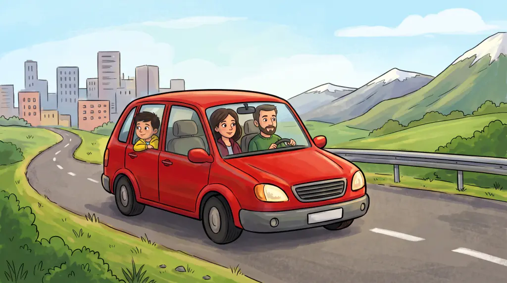
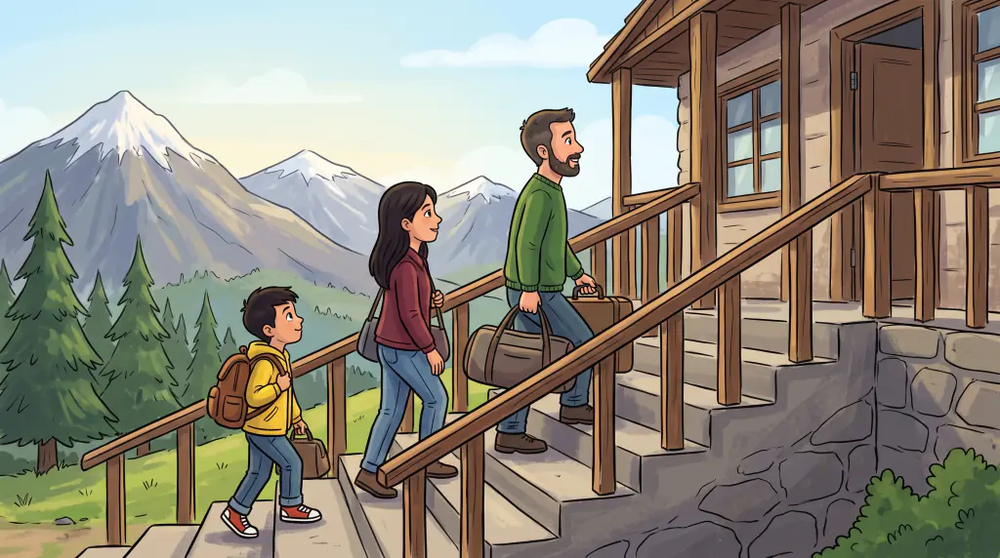
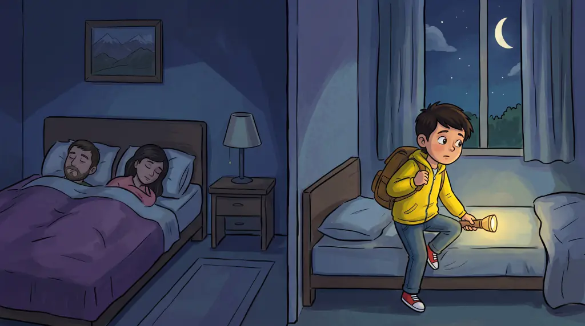
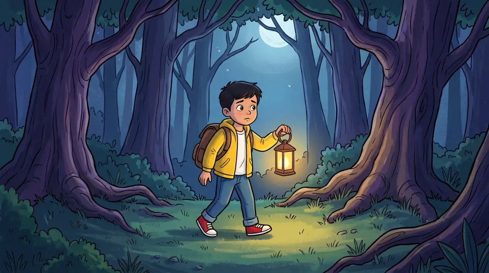
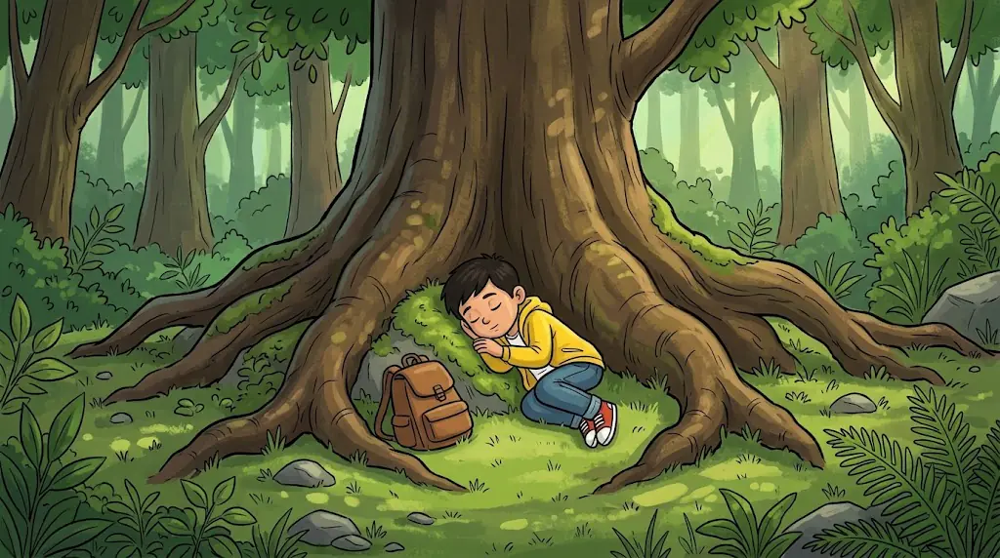
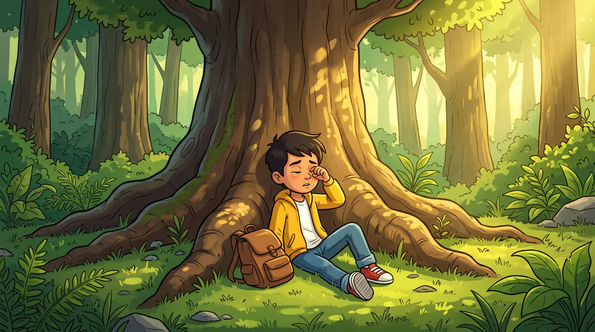
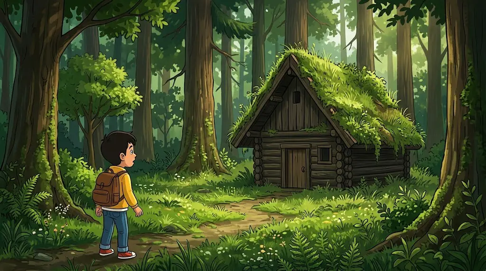
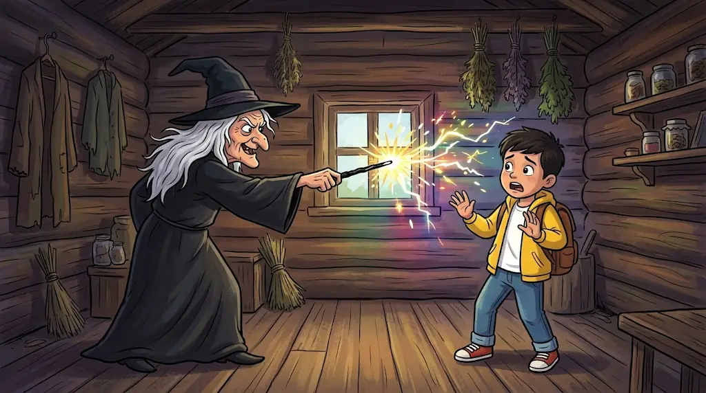
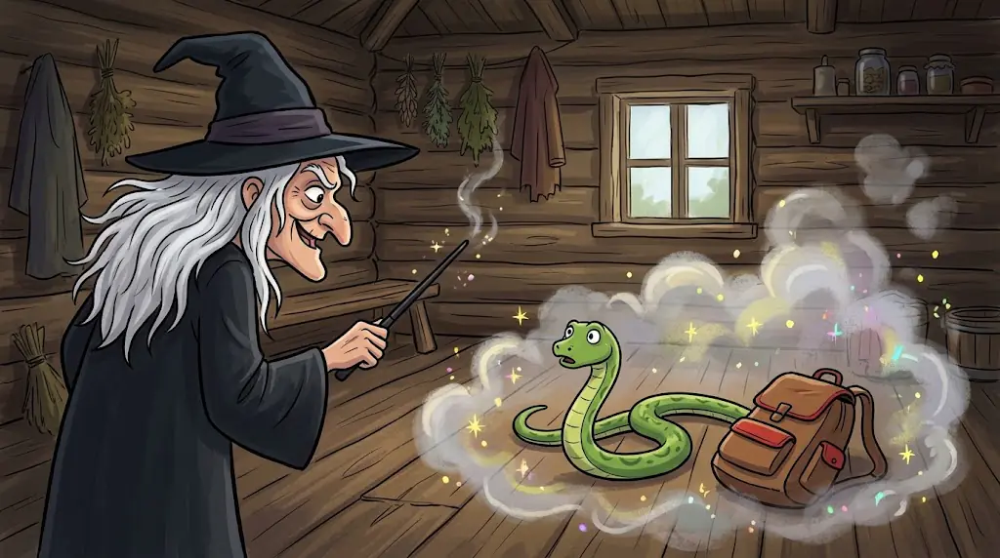
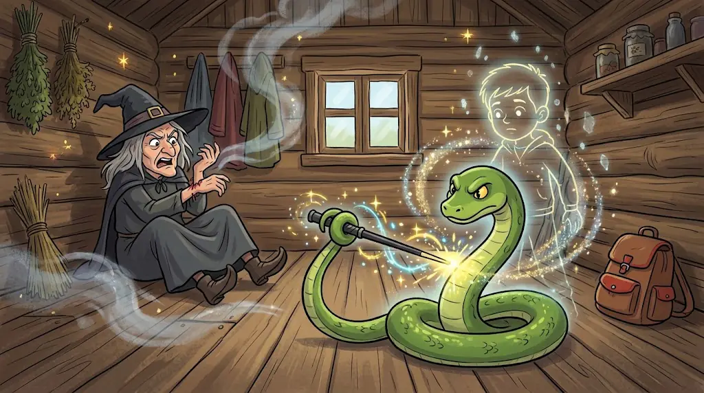

Բարև, ես Տիգրանն եմ։ Ես ութ տարեկան եմ և շատ եմ սիրում արկածներ։
Մի օր իմ հայրիկն ու մայրիկը որոշեցին գնալ քաղաքից դուրս և ինձ էլ տանել իրենց հետ։ Ես արագ նախաճաշեցի, նստեցինք մեքենան, ու շուտով մենք արդեն հասանք Սյունիք։

Բարձրացանք հյուրանոցի մեր սենյակը, որպեսզի այնտեղ գիշերենք։

— Մայրի՛կ, կարո՞ղ եմ գնալ բակ՝ խաղալու,— հարցրի ես։
— Ո՛չ, Տիգրա՛ն, չես կարող։ Մենք դեռ չգիտենք՝ ինչ տարածք է հատկացված բակին։ Մենք շուտով միասին կգնանք,— պատասխանեց մայրիկը։
Երբ բոլորս միասին դուրս եկանք բակ, ես տեսա մի ճանապարհ, որը տանում էր ուղիղ դեպի կանաչազարդ անտառ։
Արդեն գիշեր էր։ Բոլորը քնած էին իրենց սենյակներում, բացի ինձնից։

Ես թաքուն դուրս եկա հյուրանոցից և գնացի անտառ։

Շատ քայլելուց հոգնել էի, ուստի պառկեցի ծառերի տակ ու քնեցի։

Առավոտյան, երբ արթնացա, շարունակեցի ճանապարհս։

Շուտով անտառի խորքում ես գտա մի փոքրիկ խրճիթ ու որոշեցի ներս մտնել։

Այնտեղ տեսա մի պառավի, որը սև հագուստ ու գլխարկ ուներ, իսկ ձեռքին՝ սև փայտիկ։
«Ինձ թվում է՝ կախարդ է»,— մտածեցի ես ու սկսեցի հետ-հետ փախչել։
Պառավը թափահարեց փայտիկն ու ասաց. «ՍԹՈՒՓ՜»,— և ես քարացա։

Հետո նա ասաց. «Դպօց»,— և ես իսկույն օձ դարձա։

Այդ պահին ես արագ առաջ սողացի ու խայթեցի պառավի ձեռքը։ Պառավը կորցրեց իր կախարդական ուժն ու ընկավ գետնին։
Ես պոչովս բռնեցի սև փայտիկը, ուղղեցի դեպի ինձ ու ասացի. «Մարտո՜»։ Եվ նորից դարձա մարդ։

Ես արագ վազեցի դուրս, հասա հյուրանոց, մտա իմ սենյակ ու ձևացրի, թե քնած եմ։
Շուտով մայրիկն ու հայրիկը բացեցին դուռն ու ասացին.
— Տիգրա՛ն, արթնացի՛ր, արդեն գնում ենք ...